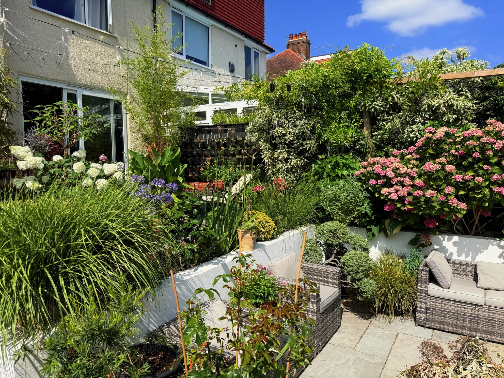
Mottingham, London
A small city garden, shaped season by season — walk through in pictures and film.
The garden opens onto a wide patio in Indian sandstone, then steps down into a sunken garden around a fire pit, ringed by raised beds — brick, rendered and painted white. A gravel path curves on from there, leading to a pergola dressed in roses, clematis and star jasmine. Beyond it stands the summer house, used as tea room, study and cinema room in one, and past that a shed, glasshouse and vegetable garden.
Dr. Sun · Updated July 2026
Structure
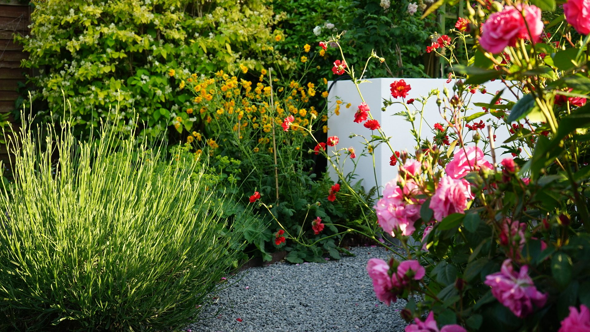
The gravel path, evening light
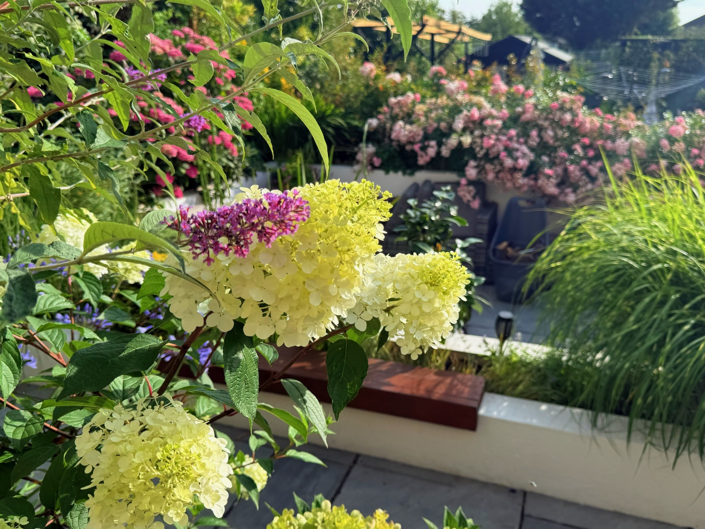
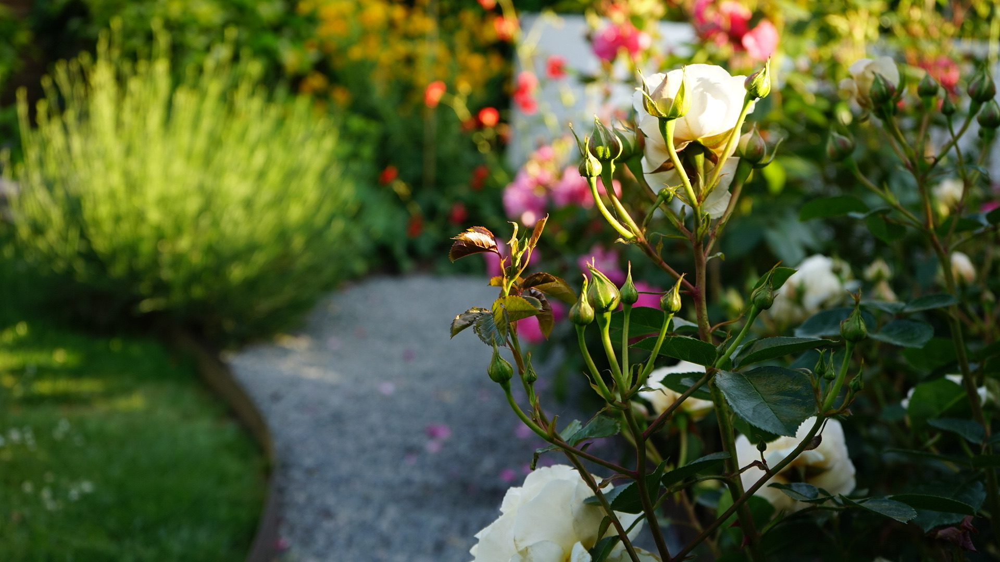
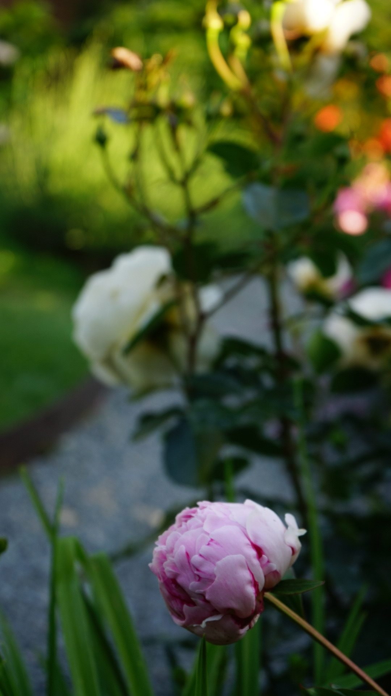
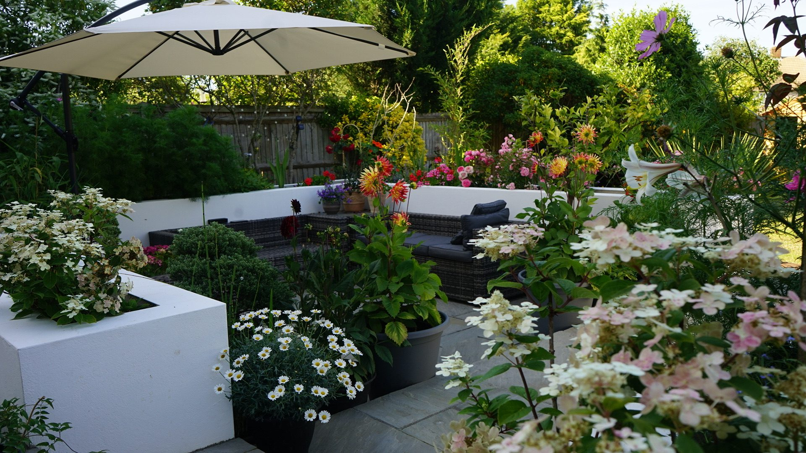
The terrace
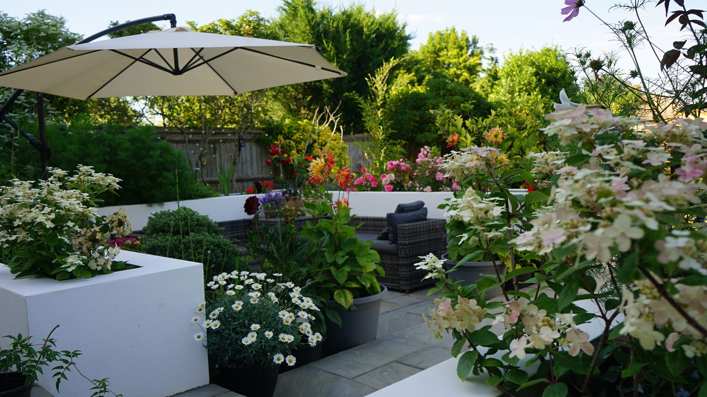
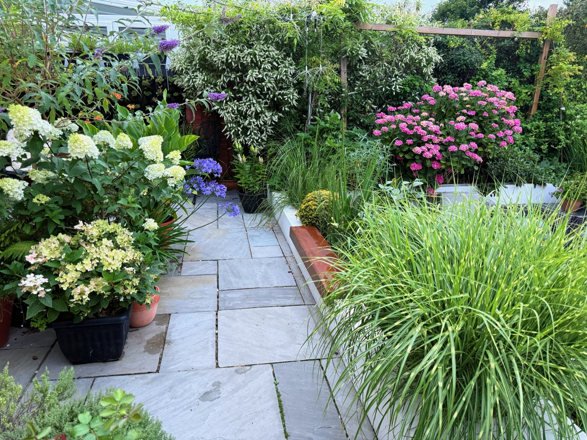
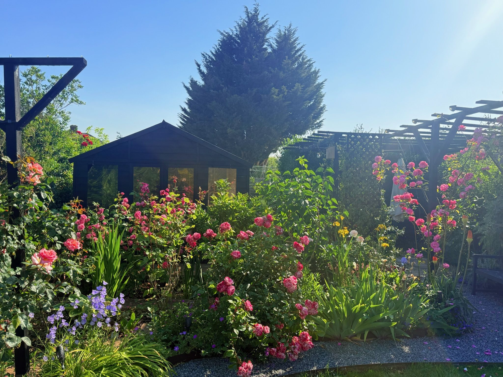
Film
Paths, the terrace and borders — the shape of the garden, without the close-ups.
What's been blooming in 2026, March through July.
The dog, the food, the lazy afternoons — what the garden is actually for.
Spring into summer, blended across a few years. No autumn or winter footage yet.
A few of the strongest shots from the whole collection.
Living in it
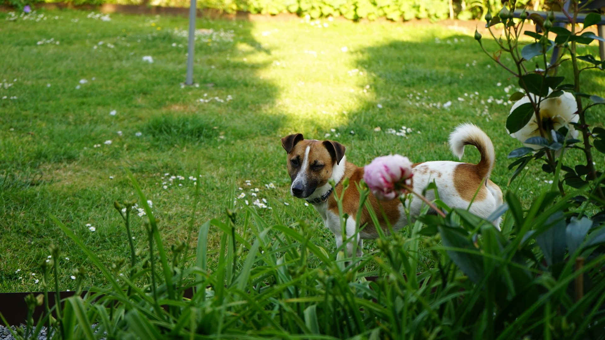
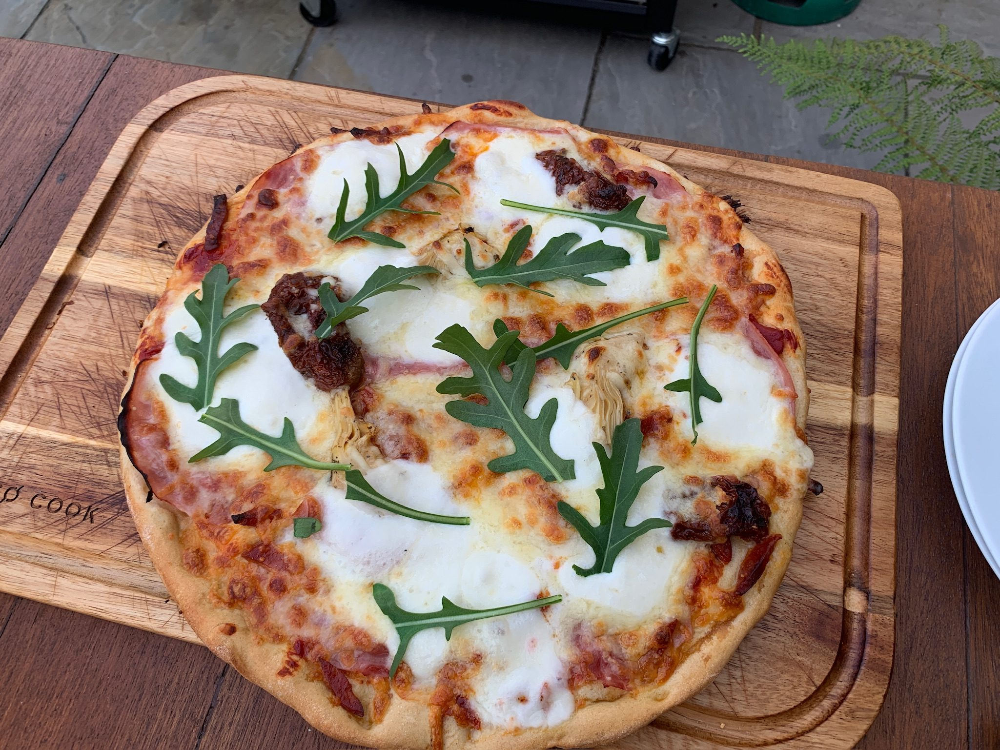
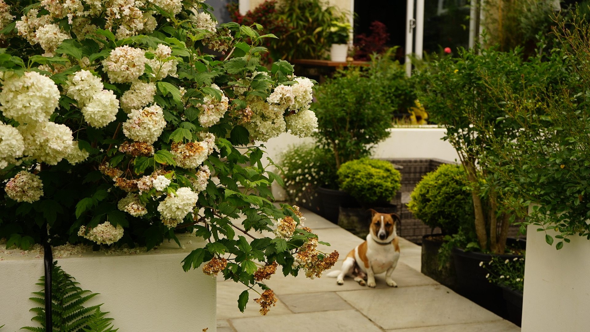
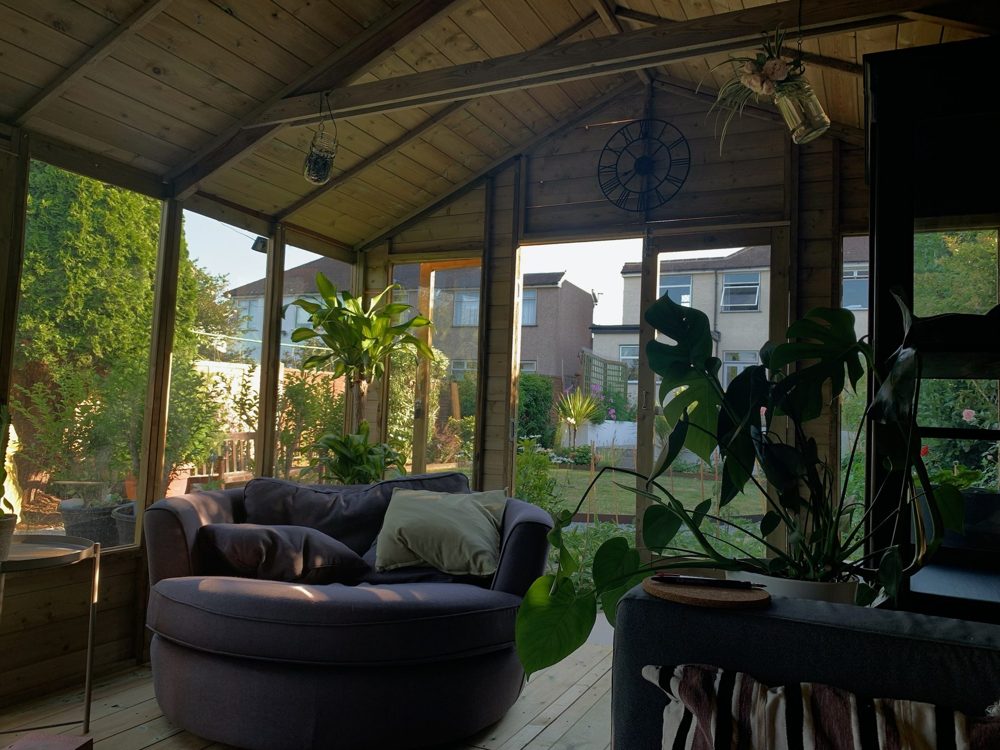
The garden room, looking out
Gallery
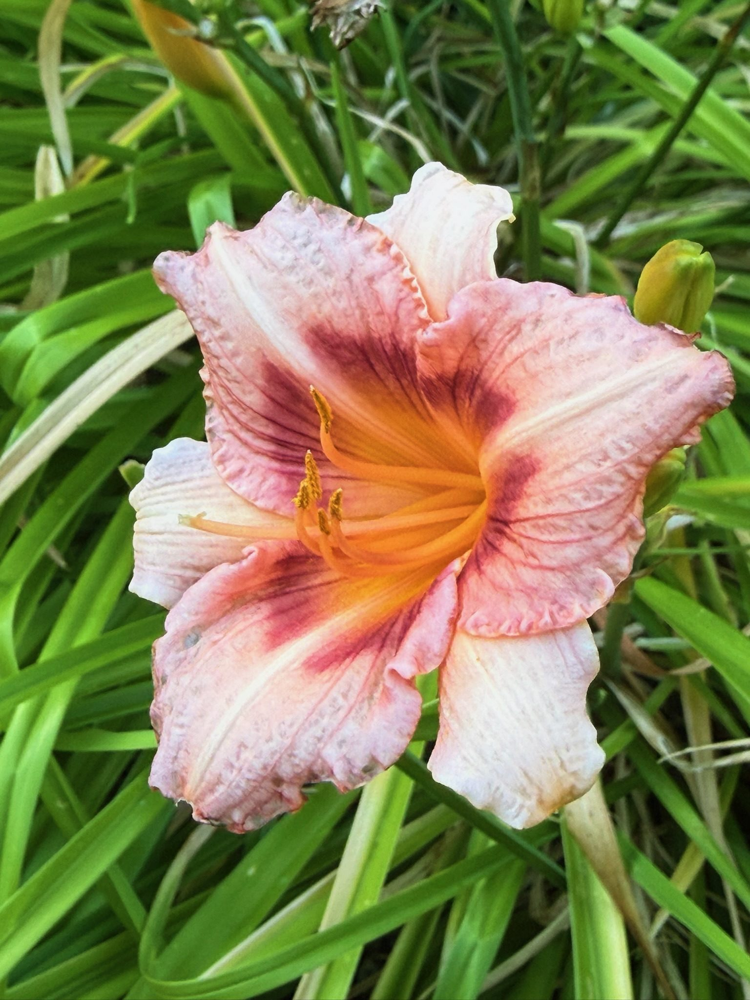
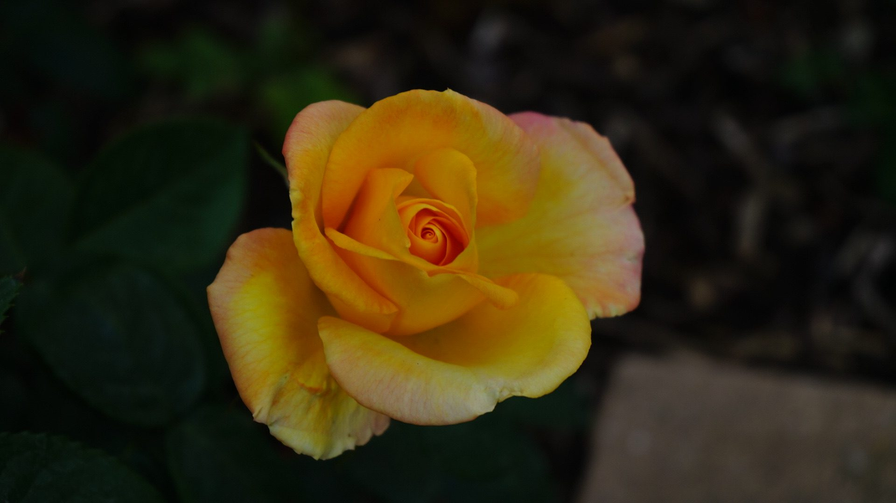